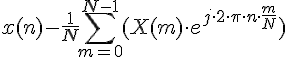
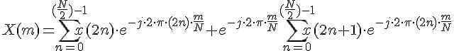
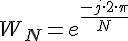
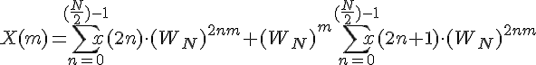
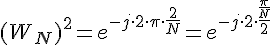
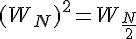
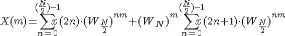
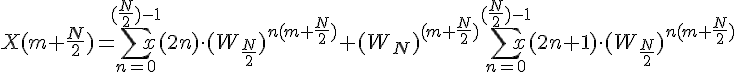
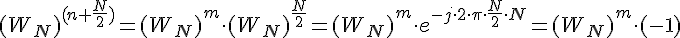

Обратное преобразование Фурье

Быстрое преобразование Фурье
Разработка алгоритма БПФ для

Введем обозначение





Вычисления по данной формуле требуют меньшего количества операций умножения, поскольку множетели в суммах одинаковые

